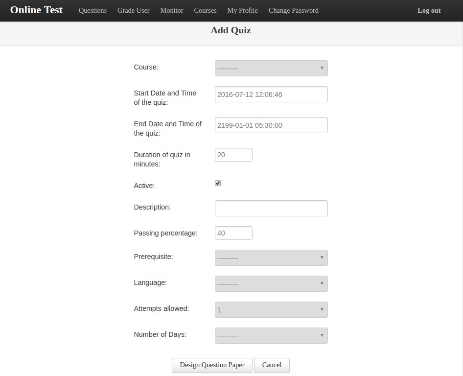

Quizzes¶
Quizzes are intrinsically associated with a course, hence to view and/or edit a quiz, we need to navigate to the courses page.
Creating a Quiz¶
Note
It is important to have created or uploaded questions before creating a quiz.
In courses click on Add Quiz button to add a quiz.
- Course - Select a course from Course field. This field is mandatory.
- Start Date and Time of quiz - The date and time after which the quiz can be taken.
- End Date and Time of quiz - The date and time after which the quiz is deactivated and cannot be attempted.
- Duration - Duration of quiz to be written in minutes.
- Active - If the quiz is active or not.
- Description - Description or name of the quiz.
- Passing Percentage - Minimum percentage required to pass the test.
- Prerequisite - Set a prerequisite quiz to be passed before attempting the current quiz.
- Language - Programming language on which the quiz is based.
- Attempts allowed - Number of attempts that a student can take of the current quiz.
- Number of Days - Number of days between attempts.
Once a quiz parameters have been set click on design questionpaper button to add questions into a quiz.
Designing Question Paper¶

A quiz can have fixed as well as random questions. Fixed questions are those question that are bound to appear for every student taking the quiz. In random questions a pool of questions is given and number of questions to be picked from the pool is set. Hence for different students, different questions from the pool will appear.
To add questions to a questionpaper
- Select Question type and marks and a list of questions will be displayed will be in the select questions to add section. Do this for both fixed questions and random questions.
- Select shuffle paper if you want to jumble up the question sequence for every student and for every attempt.
- Click on save question paper to save it or preview question paper to preview it.
Editing a Quiz¶
In Courses page, click on the quiz link to edit the quiz. Then change the parameters and click on design question paper to save it. This will redirect you to the moderator dashboard.
- In edit quiz you can also attempt the quiz in two modes -
God Mode - In God mode you can attempt quiz without any time or eligibilty constraints.
User Mode - In user mode you can attempt quiz the way normal users will attempt i.e.
- Quiz will have the same duration as that of the original quiz.
- Quiz won’t start if the course is inactive or the quiz time has expired.
- You will be notified about quiz prerequisites.(You can still attempt the quiz though)